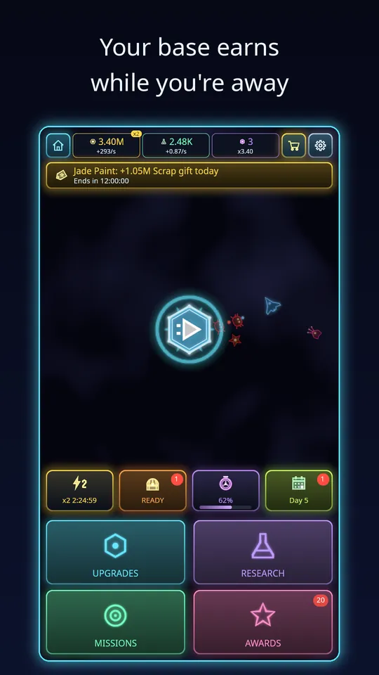
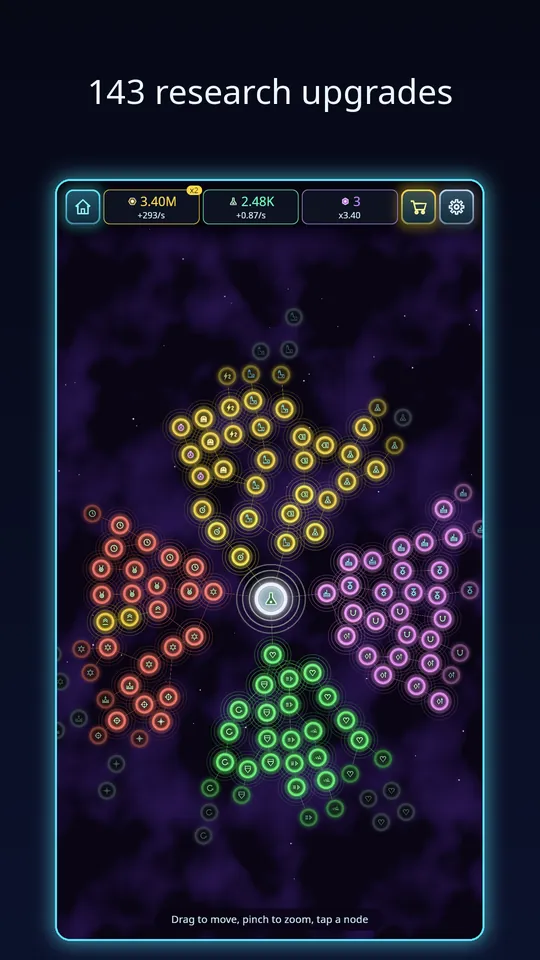

The idea behind the idle base and offline earnings in Void Swarm is that a run is only half the game. The other half is a base that never stops working. This article explains how the pieces fit together, in plain terms. If you want the big picture first, our overview of Void Swarm is a good start.
Two currencies, two jobs
Your base produces two main things. Scrap is the general-purpose currency, spent on base and hangar upgrades that make every run stronger. Research Points are spent in the research tree, which has 216 upgrades across economy, combat, survival and expedition. The top bar of every screen shows both, with the amount you earn per second next to each, so you always know how fast the base is working.

The buildings
These are the systems you meet in the Void Swarm: Idle Survivor base from your first launch.
The base starts with a handful of buildings. The Refinery produces Scrap. The Salvage Bay raises the Scrap bonus you get from each run. The Research Lab produces Research Points. The Drone Factory trains the drone you have selected, so it gains experience even when you are not flying it. All of these keep earning offline. Buildings get more expensive as you level them, so it pays to spread purchases across them rather than pushing only one.
What happens when you are away
Close the game and the base keeps going. When you reopen it, a popup shows what you earned while you were away. If the absence was at least five minutes, you can optionally watch a rewarded ad to triple that payout. The research tree has upgrades that raise your stored offline hours, which matters if you tend to leave the game overnight. For the first days, the habit is easy: open, collect, spend, run, close.
Boosts you can choose to use
Several extras speed things up, and they are all optional. A rewarded ad can give a production boost, and boosts stack up to a limit. Home also has a free chest that comes back every few hours, and watching an ad can double what it holds. If you buy Remove Ads, those ad buttons become free bonuses. None of this is needed to progress; it only changes how quickly you move.

Prestige and Void Cores
Sooner or later, upgrades get expensive enough that progress slows. Prestige is the answer. It resets your Scrap-paid buildings, and in return you receive Void Cores, which multiply your production. There is even a building, the Core Reactor, that you buy with Void Cores themselves. The multiplier appears in the top bar, so you can see the effect immediately. The sensible moment to prestige is when the cores on offer are a good step up from what you already have. Doing it too early gains little.
Ascension, the deeper reset
After you have prestiged, Ascension becomes available. It resets deeper, and in return gives you Ascension Shards and permanent perks. Think of prestige as a quick lap and Ascension as a long-term investment, to be used when your Void Core progress has stalled. It is clearly meant for the weeks ahead, not your first day.

How to plan your first week
- Spend Scrap on the cheapest upgrades first, as covered in our beginner tips.
- Put a few Research Points into the economy branch early, including offline hours.
- Prestige when the Void Cores on offer are clearly worth it.
- Keep the runs coming: stronger loadouts, such as evolved weapons, push you deeper into the sectors, and deeper sectors pay more.
Common questions about the base
Is it worth keeping the game open?
No. The base produces the same whether the game is open or closed, so there is no reason to leave it running. Open it when you want to collect, spend and play.
Should I buy production or run strength first?
Both matter. Production upgrades raise how fast Scrap arrives, and run upgrades let you reach deeper sectors that pay more. A mix of the cheapest options from each branch is a safe plan, and the tree screen helps you see what each node does now and next.
Do daily missions fit in?
Yes. Missions pay Scrap and Research Points on top of base income, and they are mostly completed by playing normal runs. Claim them when you see the badge on Home.
Why the design works this way
An idle base solves a real problem for a phone game: you will not always have ten minutes to spare. By letting the base earn without you, a short visit still gives you something to spend, and a missed day is not a lost day. The prestige loop then gives long-term players a reason to restart their climb with a stronger multiplier, which keeps the numbers meaningful for months instead of weeks. The balance of these systems is tested with a simulator that plays a regular and a casual player through the economy, so the early pacing stays reasonable when I change numbers.
Try it
The base starts earning from the moment you install. You can download Void Swarm: Idle Survivor on Google Play, make one run, then close the game and see what the base has made when you come back. If you like the loop, our look at idle survivor games on Android covers why this mix works so well.
Frequently Asked Questions
Does Void Swarm: Idle Survivor earn while the game is closed?
Yes. Buildings produce Scrap and Research Points every second, including while you are away. When you return you collect the offline earnings, and for absences of at least five minutes a rewarded ad can triple them.
What does prestige do in Void Swarm: Idle Survivor?
Prestige resets your Scrap-paid buildings in exchange for Void Cores, which multiply your production. Ascension goes deeper, resetting more for Ascension Shards and permanent perks. Both are optional and come after the early game.
Can I store more offline earnings?
Yes. The research tree has upgrades that raise your offline hours, so the base can store a longer absence. Spending Research Points there is a good idea if you often leave the game for many hours.